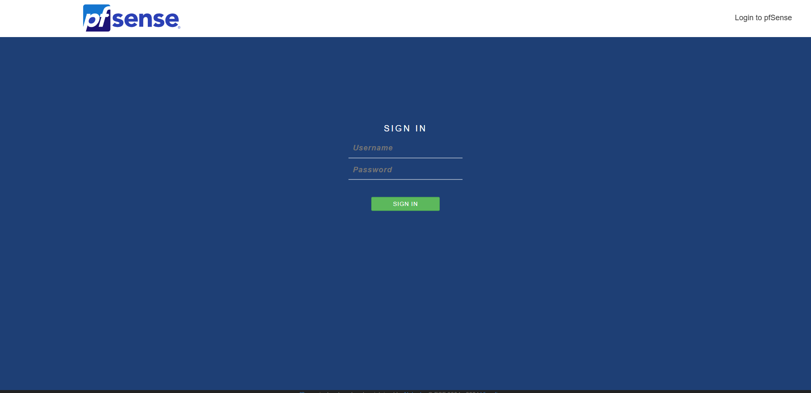

Primeros pasos con pfSense 🧱
pfSense es un firewall y enrutador open source basado en FreeBSD, ampliamente utilizado en redes empresariales y domésticas. Su interfaz gráfica y capacidades avanzadas lo convierten en una herramienta potente para la gestión de la seguridad y el tráfico de red.
¿Qué es pfSense?
pfSense es una distribución personalizada de FreeBSD diseñada específicamente para actuar como un firewall y enrutador. Ofrece una amplia gama de características, que incluyen filtrado de paquetes, VPN, balanceo de carga, portal cautivo, y mucho más.
Instalación de pfSense
Si deseas instalar pfSense en una máquina virtual o en hardware dedicado, puedes seguir estos pasos básicos:
Descargar la imagen de instalación
- Dirígete al sitio oficial de pfSense: Descarga pfSense.
- Selecciona la arquitectura de tu sistema (por ejemplo, amd64) y el método de instalación (ISO o USB).
Crear un medio de instalación
- En este caso yo lo voy a levantar en una maquina virtual, por lo cual usaremos un formato ISO
Instalar pfSense
- Arranca desde el medio de instalación y sigue el asistente para instalar pfSense en tu sistema.

En este caso ya estan configuradas las interfaces de red
Configuración inicial de pfSense
Una vez instalado, debemos configurar la o las interfaces de red (depende lo que busques), dentro de la imagen mostrada anteriormente debemos seleccionar el 1 assign interfaces y seguir lo pasos que me va indicando el instalador.
El proximo paso previo a poder ingresar a la interfaz web es asignar direcciones ip a la o las interfaces asignadas anteriormente. Se puede hacer de dos maneras, asignarlas via DHCP o asignarle una direccion ip estatica
TIP (ip estatica): Ingresar la direccion ip con la mascara de red deseada ej: 192.168.1.1/24
IMPORTANTE: Si decidis configurar dos interfaces, solo vas a poder ingresar a la interfaz web via la direccion ip de la interfaz LAN
Accede a la interfaz web
- Conéctate a la red del pfSense y abre un navegador.
- Ingresa la IP por defecto:
http://10.0.0.6. (Coloque la que tengo yo pero deberias ingresar con la que figure en la LAN o en la WAN (1 sola interfaz configurada))

Inicio de sesión
- Usuario por defecto:
admin - Contraseña por defecto:
pfsense
Configura el asistente inicial
- Establece una nueva contraseña de administrador.
- Configura las interfaces WAN y LAN según tus necesidades.
- Ajusta el servidor DNS y otros parámetros básicos.
Características destacadas
- Firewall avanzado: Filtrado de paquetes con reglas personalizadas.
- VPN: Soporte para OpenVPN e IPsec.
- QoS: Gestión de ancho de banda y priorización del tráfico.
- Portal cautivo: Ideal para redes públicas o de invitados.
- IDS/IPS integrado: A través de herramientas como Suricata o Snort.